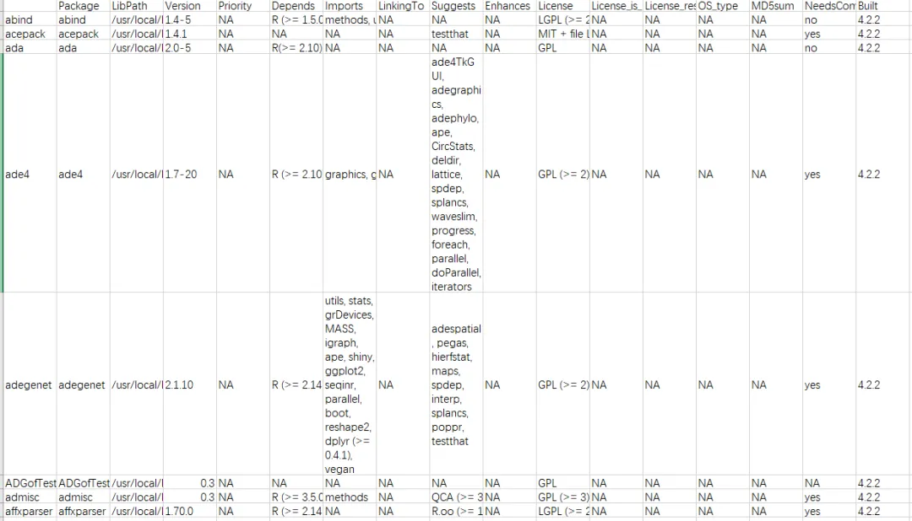

搞定两千款R包的安装
原文：https://mp.weixin.qq.com/s?__biz=MzAwMzIzOTk5OQ==&mid=2247535250&idx=2&sn=56a11385eebfabd73cdcc4958a29580b&chksm=9b3c33c2ac4bbad4aad6b70715e6e75b036999da3a84792b5905b9d68552740880815f83709d#rd 合集：服务器

一、写在前面
最近有粉丝要我们在西柚云环境中布置好的R环境，算是变相给我们来了波宣传。
如果你对下面的教程比较迷茫，那么你可以先行学习些编程基础：R语言基础学习手册 十小时学会Linux 生信Linux及服务器使用技巧 本教程基于Linux中的Rstudio环境演示，计算资源不足的同学可参考：选择西柚云的11个理由 足够支持你完成硕博生涯的生信环境 独享服务器，生信分析不求人
访问链接：https://biomamba.xiyoucloud.net/
更多内容可咨询客服微信[Biomamba_zhushou]
其实获得环境中的R包即版本号的方法很简单，两行就可以搞定：
- *
package_list <- installed.packages()write.csv(package_list,'package_list.csv')
package_list.csv的下载链接见下文，文件表头为：

其中的每一列的内容代表：-
Package:
- 包的名称。
-
LibPath:
- 包安装的库路径。这与
.libPaths()函数返回的路径相关，显示了包所在的具体位置。
- 包安装的库路径。这与
-
Version:
- 已安装的包的版本号。
-
Priority:
- 如果包是基本必须的（例如，base 或 recommended），这一列会标明其优先级。大多数包这一栏为空，表示它们不是基础包。
-
Depends:
- 列出了安装和运行此包所依赖的其他包及版本。这有助于理解包之间的依赖关系。
-
Imports:
- 列出了该包在函数中调用的其他包的函数或数据，不过这些包并不需要被加载为了该包的正常使用（不同于Depends，Depends的包需要被加载）。
-
LinkingTo:
- 主要用于R包涉及到编译代码（如C, C++或Fortran）时，列出了需要链接到的其他包。
-
Suggests:
- 包括那些不是必须的，但是增强包功能的建议包。这些包通常用于示例或扩展功能。
-
Enhances:
- 列出了哪些包可能会被当前包增强功能。
-
License:
- 包的许可证类型。
-
Built:
- 这列显示了包是在哪个R版本下构建的。这有助于了解包与特定R版本的兼容性。
-
大家可以对着上面的信息来安装指定的版本

二、.libPaths
另外我还从我的.libPaths中导出了R包相关文件

-
- *
tar -zcf site-libraray.tar.gz /usr/local/lib/R/site-librarytar -zcf library.tar.gz /usr/lib/R/librarytar -zcf lib_site-library.tar.gz /usr/lib/R/site-library
这三个R包路径有一些不同的用途和特点：
-
"/usr/local/lib/R/site-library":
-
这个路径通常用于存放系统级别的R包，这些包是由系统管理员安装的，供所有系统用户使用。
-
位于
/usr/local/lib的路径表明这些库可能是由管理员或通过超级用户权限安装的，通常不受R默认安装过程的影响，而是独立安装的包。
-
-
"/usr/lib/R/site-library":
-
这个路径与
/usr/local/lib/R/site-library相似，也是用来存放系统级的R包。 -
位置在
/usr/lib，这通常意味着这些包可能是由操作系统的包管理系统安装的（如使用APT或YUM的Linux系统），或者是系统在初始安装时预装的包。
-
-
"/usr/lib/R/library":
-
这个路径是R的默认库路径，存放的是R的基础包和核心包，这些包随R软件一起被安装。
-
这些包通常是R安装过程的一部分，是R运行的基本组件，包括了统计、图形处理等基础功能的包。
-
4.
列表和R包路径的文件都给大家准备好了，大家可以自行下载使用，使用教程请参考以下教程：
三、资料下载
下载链接：
https://pan.baidu.com/s/1NfiGlJQZDFu_y2xQzkJAlA?pwd=d9ia
提取码：d9ia
注意，我的环境是Ubuntu 20.04.5 LTS，R版本为4.2.2

如何联系我们

 留一个领取资料、开箱即用的单细胞分析镜像的微信号[Biomamba_zhushou]，方便各位随时交流。同时我们也构建了交流群矩阵，欢迎大家入群讨论。
大家可以阅读完这几篇之后添加给生信入门初学者的小贴士
没有检索，就没有发言权
留一个领取资料、开箱即用的单细胞分析镜像的微信号[Biomamba_zhushou]，方便各位随时交流。同时我们也构建了交流群矩阵，欢迎大家入群讨论。
大家可以阅读完这几篇之后添加给生信入门初学者的小贴士
没有检索，就没有发言权
已有生信基地联系方式的同学无需重复添加

 您点的每个赞和在看，我都认真当成了喜欢
您点的每个赞和在看，我都认真当成了喜欢